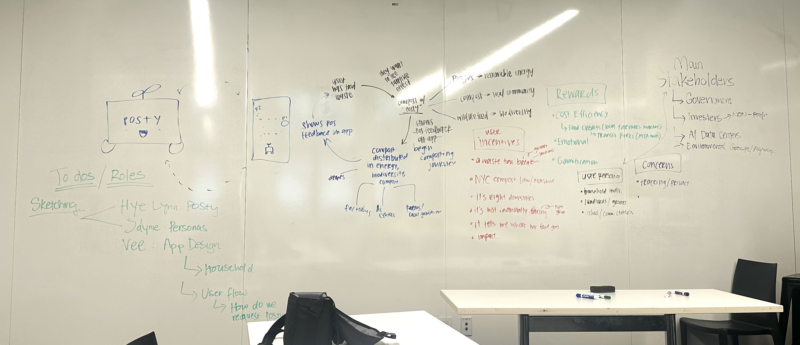
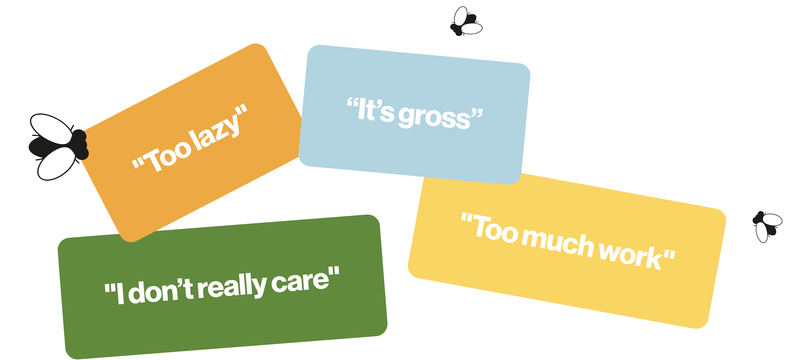
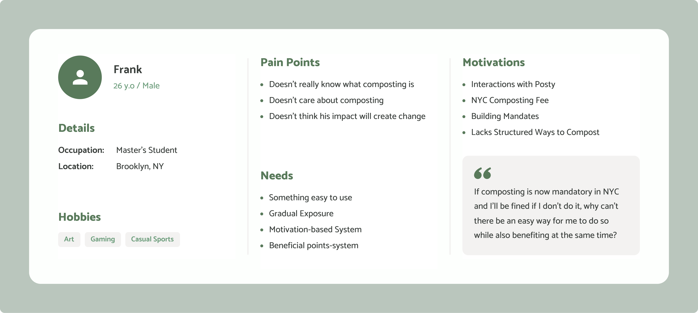
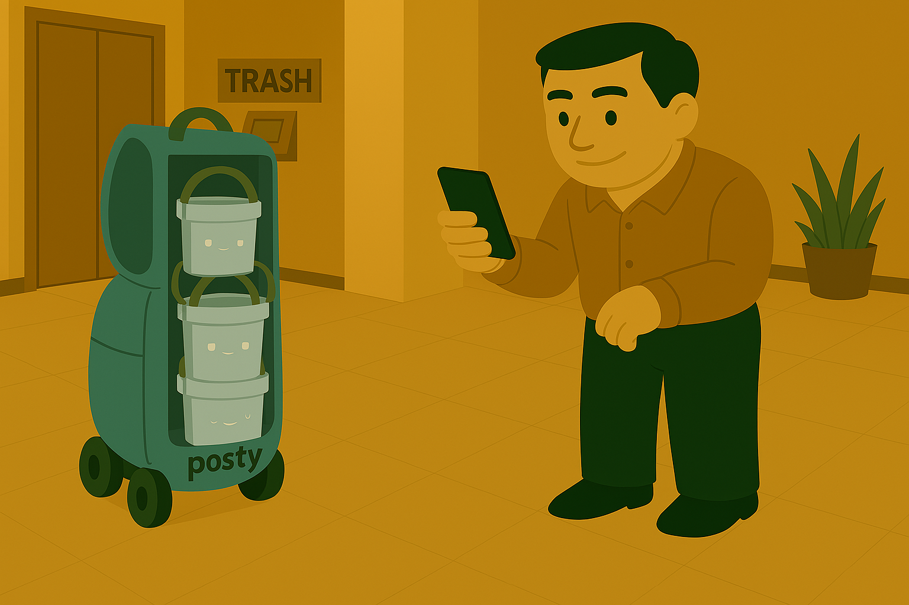
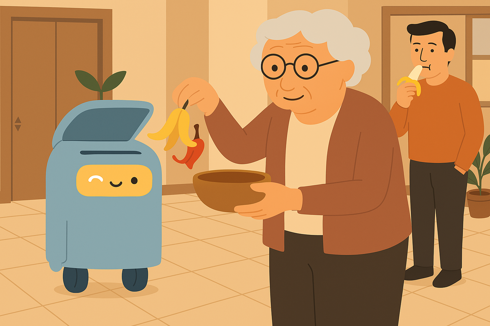
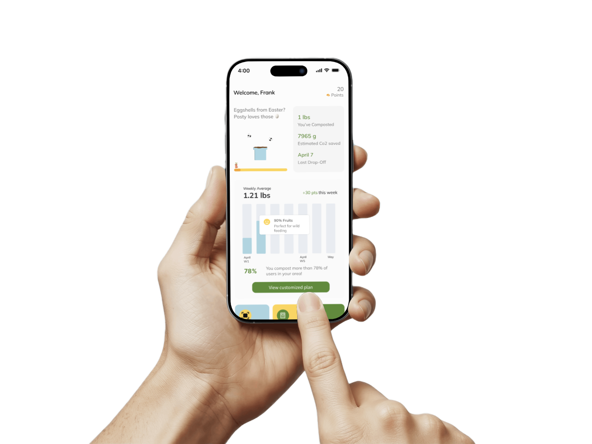
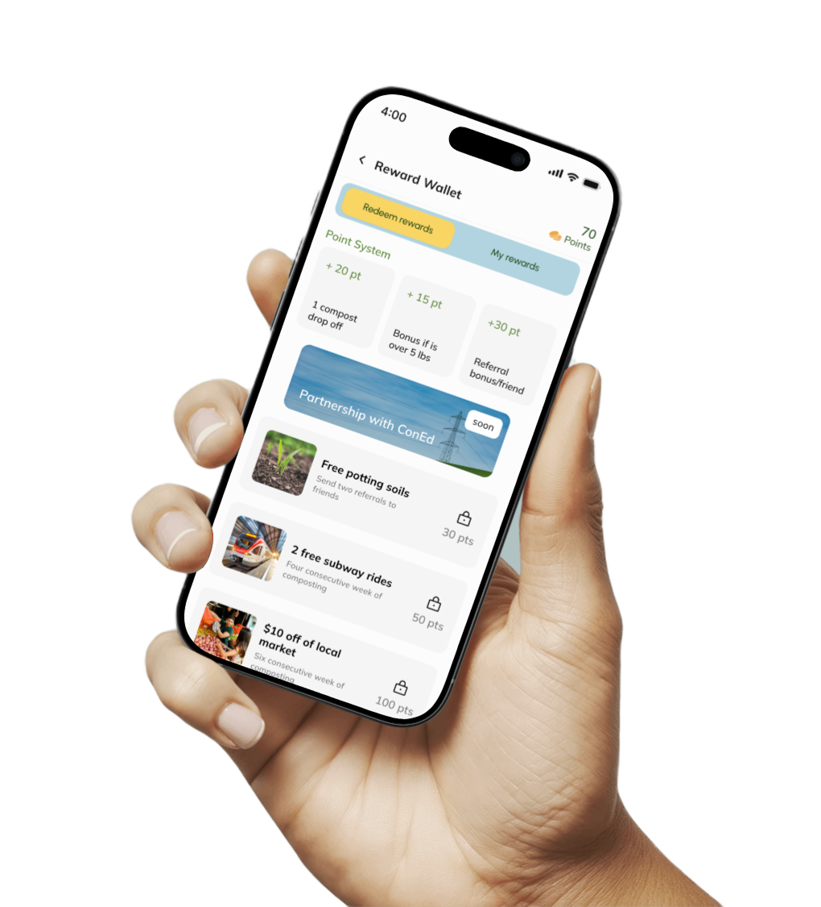
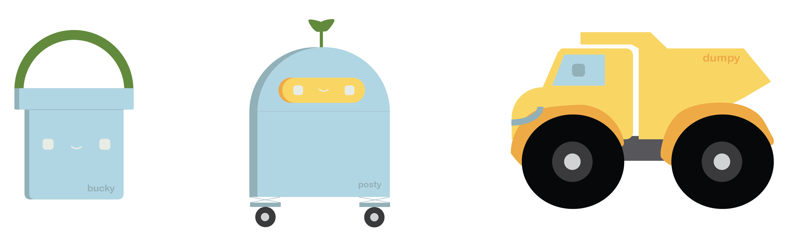
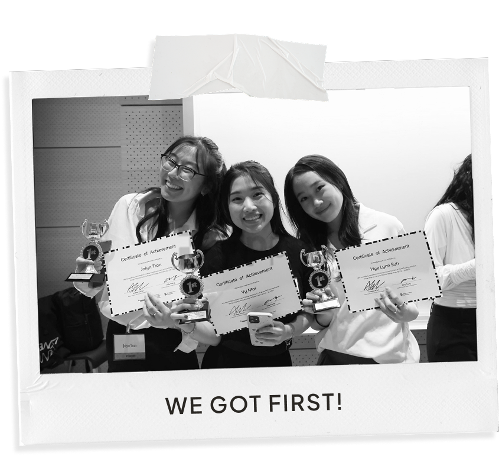

so... what's the problem?
Composting in NYC is broken. You’re legally required to do it, but most people either don’t know how, don’t care, or find it too much work. So we asked: what if composting wasn’t just required… what if it was fun?
JTBD
We needed a solution that meets people where they are – and make them actually want to compost.
We grounded our design in a simple behavioral truth: people change their habits when the new behavior is easier, more rewarding, or more delightful than the old one. So our goal became clear — we needed to create a solution that aligned with people's real lives and intrinsic motivations. A solution that didn't guilt-trip them or bury them in green jargon, but instead offered intuitive interactions, visible outcomes, and emotional rewards. We weren’t just designing for compliance — we were designing for connection.
This thinking led us to create Posty — a lovable, AI-powered compost companion designed to transform food waste into tangible good. Posty helps turn your banana peels into park soil, your leftovers into school heating, and your scraps into community stories. It’s more than a bin or an app — it’s a system designed to make composting visible, personal, and emotionally engaging. Posty blends the intelligence of AI, the power of community data, and the joy of character-driven interaction to make climate action feel less like a burden and more like a game.
understanding the problem space
Once we landed on the core concept, we immersed ourselves in understanding the composting ecosystem in NYC. The numbers were staggering:
over 1 million tons of food waste each year. And 97% of that goes to landfill or incineration — creating methane, a greenhouse gas over 80x more harmful than CO₂ in the short term.
That means a massive amount of methane is being released into the atmosphere. Composting could divert this waste and return it to the local environment, but the systems in place are fragmented and unapproachable. We knew that to design a compelling solution, we had to deeply map the system — understanding not just the technical flow, but the social, behavioral, and emotional bottlenecks.

We realized that with our solution, we can create a circular ecosystem, but with the help of our mentors, we also understood that we needed to heavily narrow down our user narrative.
understanding user needs
At one point, our team hit a wall. We had too many ideas and no clear direction. That’s when we decided to stop guessing — and start listening. We visited the Union Square compost drop-off site and met with the Lower East Side Ecology Center. Their staff was passionate, but overwhelmed and underfunded. They wanted to scale, but needed community buy-in and better tools.
We also talked with regular New Yorkers, many of whom told us composting felt gross, pointless, or too much work. Their honesty was vital.

It reminded us that successful design isn’t about preaching to the already-converted — it’s about engaging the skeptics. That’s when we knew Posty had to offer something radically different from existing solutions like Lomi or EvoBin. Posty needed to feel alive, accessible, and maybe even a little lovable.
We also benchmarked AI food waste competitors such as Lomi, Winnow, and EvoBin.
But none of them offered a joyful, human-centered interaction that changes behavior. Posty isn’t just a bin — it’s a community-powered compost movement, built to scale.
building our narrative
From these insights, we built a user narrative around Frank — a fictional 26-year-old New Yorker who’s never composted, doesn’t really understand how it works, and doesn’t think it matters. Frank’s perspective helped us design with empathy.

After being warned of a fine for not composting, Frank says this: "If composting is now mandatory in NYC and I’ll be fined if I don’t do it, why can’t there be an easy way for me to do so while also benefiting at the same time?"
from here, we asked ourselves...
HMW
make a composting system that is so easy, so rewarding, and so fun that people actually want to do it?
To explore potential solutions, we started building our flow and sketching out our mobile screens.
With every step of our system's map, we kept Frank in mind and designed to spark incentive, joy, and emotions.
While my teammates worked on wireframes and flows, I began sketching the Posty ecosystem — a trio of bots named Posty, Bucky (the smart bin), and Dumpy (the delivery bot) who would guide users through the process in a way that felt familiar, playful, and fun.

Using Sora AI, one of my teammates and I started generating images to build our storyboarded video demo.


.png)
final solutions: how posty works
Posty makes composting feel like a game!
1. Compost
Fill your Bucky bucket and drop off your compost to our nearest locations
2. Track
Posty's AI turns your compost into visible impact, converting your food scraps to points

3. Earn
Lastly, collect your points and claim your rewards.

my role

I led the visual and motion design for Posty — bringing our core characters to life and shaping the tone of our entire solution. I designed Posty, Bucky, and Dumpy as more than illustrations — they were emotional anchors. I also collaborated on UI design and interaction planning, helping ensure that our app screens, animations, and reward flows felt not just functional, but delightful. I focused on how each detail could turn composting from a chore into an act of care — for your neighborhood, your city, and yourself.
the result

Our team was honored to receive first place at the AI Design Hackathon for Posty. But more than the award, what stayed with me was the clarity of our insight:
even technical, structured systems (like composting) can create emotional connections